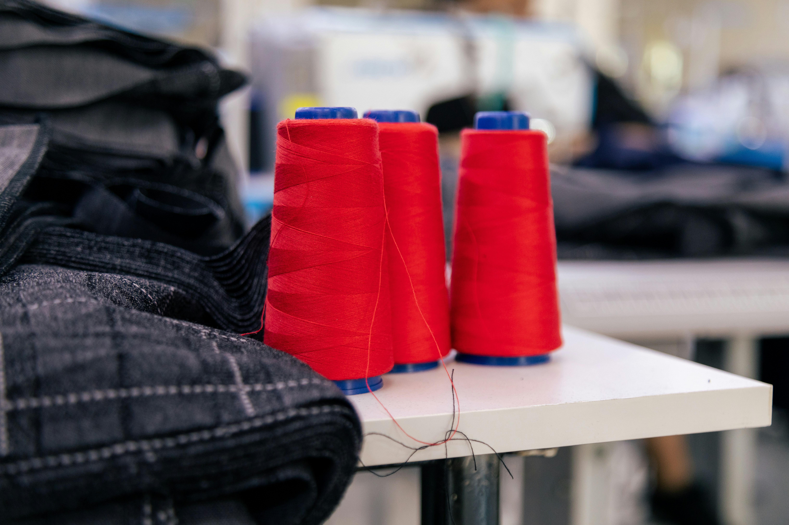

About Tailor Francis
More than two decades of cutting, fitting and finishing garments that people are proud to wear.
Our story
For over 20 years, Francis has dedicated himself to the craft of tailoring, building his experience one garment, one customer and one stitch at a time.
What matters to us has always been simple: taking the time to understand what a customer needs and doing the work with care. Sometimes that means making a garment from scratch. Other times, it's repairing a favourite piece, adjusting a fit or bringing traditional African clothing together beautifully.
We know that clothes are more than just things we wear. They're part of how we express ourselves, celebrate important moments and move through everyday life. That's why we approach every job with attention to detail, respect for your prefrences and an appreciation for the garment in our hands.
Today, Tailor Francis brings that experience to customers in Watford and beyond, offering practical, dependable tailoring services with a personal touch.
What We Believe In
Attention to detail
Every measurement, stitch and finishing touch matters. We take pride in work done properly.
A personal approach
We listen to what you want, answer your questions and treat every customer with respect.
Making clothes last
A small alteration or repair can give a much-loved garment a new lease on life. We believe in making the most of what you already own.
Honest, dependable service
Clear communication, practical advice and work approached with care, whatever the job.
How your garment is made
A clear process, so you always know what happens next.
- Consultation
We discuss the occasion, style, fabric and budget, and show you options. - Measurement
We record your measurements and posture notes, and keep them on file for repeat orders. - Pattern and cutting
A pattern is drafted to your measurements, then the fabric is cut by hand. - First fitting
You try the garment while it is being built, so changes cost you nothing extra. - Finishing
Pressing, buttonholes, lining and final checks before your garment is released. - Final fitting and delivery
You approve the fit on the day. Not satisfied? We adjust it.
Fabrics and materials
Good tailoring starts with good cloth. We help you choose a fabric that suits the occasion, the weather and your budget, and we are open about quality and price.
Fabrics we work with:
Wool blends Linen Cotton Brocade Aso-oke Lace Senator fabricYou are welcome to bring your own fabric, and we will advise honestly on whether it suits the style you want.

Our promise to you
We want you to order with complete confidence.
The fit promise
If your garment does not fit as agreed at the final fitting, we adjust it until it does, at no extra charge for fit corrections.
The honest timeline
We give you a delivery date up front and tell you early if anything changes. Rush orders are possible and always priced openly.
Clear pricing
You get a quote before we start. No surprise charges at collection.
Your measurements stay safe
Your details are kept private and used only to make your garments. Reorders are quick because we keep them on file.
Before you order
How long does a bespoke suit take?
Most custom suits take 4-6 weeks to complete, depending on the design, fabric availability, and fitting requirements. If you have a specific deadline, please let us know and we'll do our best to accommodate your schedule..
Do I need to pay a deposit?
Replace with your deposit policy.
What if I am not happy with the fit?
You approve the fit at the final fitting. If it is not right, we adjust it.
Can you copy a garment I already own?
Yes. Bring it in or send clear photos and measurements.
Do you deliver?
Replace with your delivery areas and charges.
Let us make something you will be proud to wear
Book a fitting or send us a message. We reply quickly.
Book a fitting Contact us